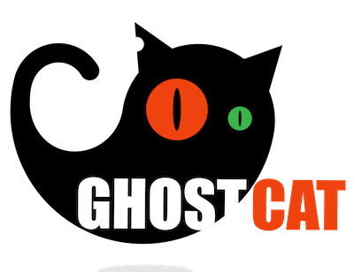

Simon McCabe
OSCP · OSWP · PWPP · PWPA · PAPA · EnCE · Linux+ · LPIC-1 · Network+ · Security+ · Pentest+ · eJPT · eWPT · BSc · PGCert

OSCP · OSWP · PWPP · PWPA · PAPA · EnCE · Linux+ · LPIC-1 · Network+ · Security+ · Pentest+ · eJPT · eWPT · BSc · PGCert
...Gh0stcat Exploit...

I just got done looking at Gh0stcat on Tryhack me. In future, we'll return to this and take a deeper dive into looking at the following topics over several different posts:
For now, let's look at Tomcat. By default, Apache Tomcat listens on 3 ports, 8005, 8009 and 8080. A common misconfiguration is blocking port 8080 but leaving ports 8005 or 8009 open for public access. Port 8005 is less interesting and only allows shutting down the Tomcat server, while port 8009 hosts the exact same functionality as port 8080. The only difference being that port 8009 communicates with the Apache JServ Protocol while port 8080 uses HTTP.
Having the Tomcat service exposed allows attackers to access the Tomcat Manager interface. Although often password protected, brute force attacks using default and common passwords have proven successful in the past. Once access to the manager interface has been achieved, compromising the server becomes trivial with the WAR file deployment functionality.
The Apache JServ Protocol (AJP) is essentially an optimized binary version of HTTP. This makes communication with the AJP port rather difficult using conventional tools. The simplest solution is to configure Apache as a local proxy, which performs transparent conversion of HTTP traffic to AJP format. Once configured, an attacker can use common tools such as Hydra and Metasploit to exploit the Tomcat server over AJP. (Source).
The Gh0stCat vulnerability is a LFI, or local-file inclusion. This means that we can request a file that’s stored locally on the machine running:
This is approximately 13 years worth of Tomcat installations. This is huge.
Here is my video, exploiting this vulnerability: